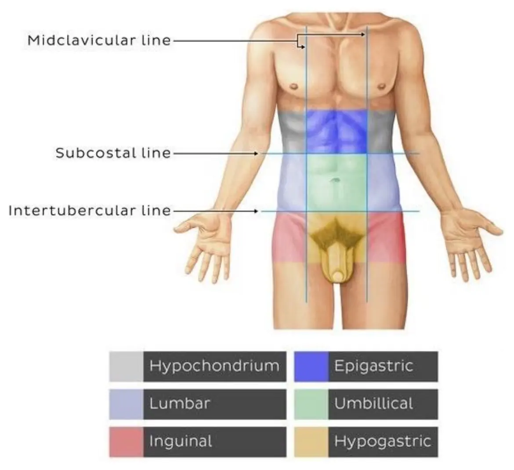

Courses › Human Anatomy › Module 8
Human Anatomy · 6111
Module 8 — Abdomen
Topics: 8.1 Digestive • 8.2 Urinary/Renal • 8.3 Reproductive • 8.4 Endocrine • 8.5 Lymphatic • 8.6 Abdominal Wall
📖 How to Use These Notes
- Best used with the lecture playing — keep these open, follow along, and add your own notes as you watch
- Lecture banners mark the start of each topic and run in the same order as the videos
- 🎙 Callouts = direct insights from the instructor's transcript
- ★ Tips = exam-relevant content or things the instructor told you to prepare
- Figures are taken directly from the module's slide decks
- Each topic ends with its own Quick-Reference Glossary
- Written from last year's recordings — if a lecture has been re-recorded or resequenced, Canvas wins
- Dr. Rocky Barrett (board-certified in cardiopulmonary PT) records this module — expect the clinical spotlights to lean on his home-health and geriatric practice
- Knowledge Check #4 covers Module 8
- The abdominal palpation skills list lives in this Drive folder
- This is the visceral tour: less origin-and-insertion memorising, more location-function-referral. Sync Session 8 tests exactly that with two patient cases
ORIENTATION
Regions and Quadrants — the Map Everything Else Uses

| NINE ABDOMINOPELVIC REGIONS | FOUR QUADRANTS |
|---|---|
| Drawn by 4 parallel bisecting lines: 2 vertical (mid-clavicle to mid-thigh) · 1 subcostal (inferior to rib 10) · 1 connecting the ASISs | Two perpendicular lines crossing at the umbilicus — vertical through mid-sternum and pubic symphysis, horizontal just superior to the iliac crests |
| Regions: hypochondrium (paired) · epigastric · lumbar (paired) · umbilical · inguinal (paired) · hypogastric | RUQ · LUQ · RLQ · LLQ — the everyday clinical shorthand |
| Region | What lives there (per Sync 8) |
|---|---|
| Hypochondriac | R: liver, gallbladder · L: spleen, colon, pancreas |
| Epigastric | Stomach, liver, pancreas, duodenum |
| Lumbar | R: ascending colon, appendix, right kidney · L: descending colon, left kidney |
| Umbilical | Small intestine |
| Inguinal | R: appendix, cecum · L: descending + sigmoid colon |
| Hypogastric | Bladder, sigmoid colon, anus, reproductive organs |
TOPIC 8.1
Digestive System
1. Swallowing — Three Phases
| Phase | Control | What happens |
|---|---|---|
| Oral | Voluntary | Tongue pushes food against the hard palate; bolus forms; the pharyngeal reflex fires when the bolus touches the posterior pillars of the tonsils |
| Pharyngeal | Involuntary (brainstem) | Soft palate elevates to seal the nasopharynx; epiglottis closes over the trachea to prevent aspiration; pharyngeal muscles propel the bolus down |
| Esophageal | Involuntary | Peristalsis carries the bolus down; the lower esophageal sphincter relaxes to admit it, then closes to prevent reflux |
- Esophagus: muscular tube, pharynx → stomach. Parasympathetic supply from the vagus (CN X) and recurrent laryngeal nerve; sympathetic from the cervical/thoracic trunk and T5–T12.
2. Peritoneum and Its Folds
| Structure | What it is and does |
|---|---|
| Peritoneum | Serous membrane: parietal lines the walls, visceral wraps the organs, the peritoneal cavity sits between. Protects, connects, suspends, and prevents friction |
| Mesentery | Double layer of peritoneum tethering the intestines to the posterior wall — carries the neurovascular supply of the gut, stores fat, supports immunity |
| Greater omentum | The largest peritoneal fold — immune cells, fat storage, absorbs bacteria and toxins from the cavity |
Clinical spotlight — ascites
- Fluid accumulating in the peritoneal cavity
- Causes: cirrhosis · heart failure · cancer · infection
- The cirrhosis link: dying, hardening liver tissue obstructs portal flow, and fluid backs into the cavity — which is why ascites and cirrhosis share a slide
3. The Organs
| Organ | Location | Function highlights |
|---|---|---|
| Stomach | LUQ/epigastric | Parts: cardia · fundus · body · pyloric part. Wall: mucosa → submucosa → muscular (longitudinal + circular + oblique) → serosa. Mechanical + chemical digestion, absorption, hormone secretion |
| Spleen | Left side, inferior to diaphragm, posterolateral to stomach, anterior to ribs 9–10 | Largest immune organ — matures white cells, filters blood, recycles damaged erythrocytes |
| Liver | RUQ, directly inferior to the diaphragm | Metabolism of absorbed substances · drug/chemical breakdown · clotting-protein synthesis · glucose storage as glycogen · bile secretion |
| Gallbladder + biliary ducts | Under the liver | Stores bile; empties it into the duodenum on demand via the ducts |
| Pancreas | Retroperitoneal, behind the stomach | Digestive enzymes (exocrine) + hormones (endocrine — full story in 8.4) |
| Small intestine | Pylorus → ileocecal junction | Duodenum (receives chyme + enzymes + bile) → jejunum (main nutrient absorption) → ileum (completes absorption) |
| Large intestine | Framing the abdomen | Cecum → appendix → ascending → transverse → descending → sigmoid colon → rectum → anal canal. Water/electrolyte absorption, feces formation and storage |
TOPIC 8.2
Urinary / Renal System
- Jobs: eliminate fluid and waste; regulate blood volume, pressure, pH, and electrolytes. Upper (abdominal) part = kidneys + ureters; lower (pelvic) part = bladder + urethra.
1. Kidneys
| Feature | Detail |
|---|---|
| Location | Retroperitoneal, T12–L3, either side of the column; the right kidney sits lower because of the liver; about three vertebrae tall; wrapped in perirenal fat |
| Protection | Transverse processes, psoas, quadratus lumborum — but vulnerable below rib 12 and above the iliac crest, lateral to the spine |
| External / internal | Two poles, two borders, fibrous capsule, hilum · cortex → medulla → renal pelvis |
| Neurovascular | Renal artery and vein; renal plexus — afferents carry pain, efferents are sympathetic |
| Functions | Eliminate toxic metabolites · regulate blood homeostasis and pressure · produce hormones |
Kidney pain referral — the PT-relevant map
- Back / flank on the affected side — the classic
- Groin
- Lower abdomen in severe infection
- This is why kidney involvement made the hypothesis list in BOTH the Module 7 and Module 8 patient cases: renal pain masquerades as musculoskeletal back pain
2. Bladder, Urethra, and the UTI Story
- Bladder wall = detrusor muscle + mucosa; internally the two ureteric orifices + internal urethral orifice frame the trigone. Innervation: vesical and inferior hypogastric plexuses.
| Male vs female | Male | Female |
|---|---|---|
| Capacity | ~700 ml | ~500 ml |
| Urethral length | 18–20 cm | 3–4 cm |
| Detrusor thickness | 3.1–3.3 mm | 2.7–2.9 mm |
Clinical spotlight — urinary tract infections
- Urethral length is the anatomy behind the epidemiology: the short female urethra and its proximity to the anus make ascending infection far more common
- Male risk rises with prostate hypertrophy — constricting flow, causing retention, and retained urine breeds infection
- Menopause predisposes via decreased secretions — less outward flow, easier inward travel
- UTIs can escalate to sepsis — a pattern the lecturer sees repeatedly in geriatric home health. Hydration → urine flow → a flushed system is the simplest prevention
- Physical debility and reduced mobility are contributing factors — which makes this a PT problem, not just a medical one
TOPIC 8.3
Reproductive System
1. Development — the Shared Start
| Stage | Weeks | What happens |
|---|---|---|
| Gonadal (indifferent) | ~5 | Gonads exist before differentiating into testes or ovaries |
| Duct differentiation | 8–12 | Depends on the presence or absence of testosterone and Anti-Müllerian Hormone |
| External genitalia | 9–14 | Develop in response to hormonal secretions or their absence |
| Gonadal descent | From 7 | Continues until after birth in males; ovaries reach the pelvis around week 12 |
2. Female
| Division | Organs | Function |
|---|---|---|
| Internal genitalia | Ovary · uterine tube · uterus · vagina | Ova formation, estrogen + progesterone production, implantation, fetal development |
| External genitalia | Vulva (mons pubis, labia majora/minora, clitoris, vestibule) | Reproduction, sensation, urination |
- Perineal supply: internal pudendal artery (branches: inferior anorectal, perineal, vestibular-bulb, deep clitoral) · pudendal nerve (inferior anal, dorsal clitoral, perineal → posterior labial branches).
Clinical spotlight — postpartum pelvic dysfunction
- Pelvic floor muscle weakness · pelvic organ prolapse · incontinence
- Diastasis recti (returns in 8.6) · pelvic girdle pain
- Perineal pain and scarring · dyspareunia · pelvic nerve damage · coccyx pain
- This list is a preview of an entire PT specialty — pelvic health
3. Male
| Division | Organs | Function |
|---|---|---|
| Internal genitalia | Testis, epididymis, spermatic cord, ductus deferens, ejaculatory duct + accessory glands (seminal, prostate, bulbourethral) | Sperm production/storage/transport; male sex hormones |
| External genitalia | Penis (root · body · glans; 2 corpora cavernosa + 1 corpus spongiosum), scrotum | Reproduction + urinary passage |
- Penile innervation is a two-system job: pudendal nerve — sensory and sympathetic (ejaculation); pelvic splanchnic nerves — parasympathetic (erection, via the prostatic plexus); ilioinguinal to the root skin.
- Cremaster (from the sync session): lateral part from internal oblique + transversus abdominis and the inguinal ligament, medial part from the pubic tubercle and crest → tunica vaginalis. Retracts the testis. Genital branch of the genitofemoral nerve (L1–L2).
Clinical spotlight — prostate cancer
- Symptoms: painful/difficult urination, erectile dysfunction
- Risks: age > 50, overweight, family history, African or Caribbean descent
- The anatomical danger is lymphatic proximity — the prostate sits in a high-density lymphatic neighbourhood, so metastasis comes early
- Very treatable when caught early — which is the whole argument for screening
TOPIC 8.4
Endocrine System
A network of glands controlling growth, metabolism, temperature, sexual maturation, reproduction, blood pressure, immunity and more — by secreting hormones into the blood. Ovaries and testes were covered in 8.3.
1. The Glands
| Gland | Location | Hormones / function |
|---|---|---|
| Pineal | Center of the brain, part of the epithalamus | Melatonin — circadian rhythm |
| Hypothalamus | Below thalamus, above pituitary | TRH · CRH · GnRH — the releasing hormones that run the pituitary |
| Pituitary | Inferior to hypothalamus via the infundibulum | Anterior: GH, prolactin, FSH, LH, TSH, ACTH · Posterior: oxytocin, vasopressin |
| Thyroid | Inferior to the cricoid cartilage, anterior to the esophagus | T3, T4 (metabolism) + calcitonin (calcium) |
| Parathyroids | Embedded in the posterior thyroid | PTH — serum calcium and phosphorus |
| Thymus | Thyroid → 4th costal cartilage | T-cell maturation (positive/negative selection); thymosin, thymopoietin, thymulin |
| Pancreas | Retroperitoneal, behind the stomach | Islets of Langerhans → insulin, glucagon, somatostatin (endocrine) + digestive enzymes (exocrine) |
| Adrenals | On top of each kidney, near rib 12 | Cortex: cortisol, aldosterone, sex hormones · Medulla: epinephrine, norepinephrine |
- The thyroid negative feedback loop, as the deck draws it: ↑TRH (hypothalamus) → ↑TSH (pituitary) → ↑T3/T4 (thyroid) → ↓TRH and ↓TSH. The template for every endocrine axis you'll meet in Physiology M10.
| HYPOTHYROIDISM | DIABETES |
|---|---|
| Thyroid under-produces T3/T4 | A problem of insulin and sugar regulation |
| Metabolism, energy production and overall body function slow down | Type 1: autoimmune destruction of insulin-producing cells |
| Type 2: insulin resistance — the lifestyle-associated form |
TOPIC 8.5
Lymphatic System
- Functions: fluid balance · immune response · fat absorption · blood pressure · waste transport.
| Organ | Detail |
|---|---|
| Bone marrow | Red in flat bones + long-bone ends (pelvis, sternum, ribs, vertebrae, skull, proximal femur/humerus) — makes and matures B and T cells. Yellow in long-bone shafts |
| Thymus | T-cell finishing school (8.4) |
| Lymph nodes | Clustered at the neck, axilla, thorax, abdomen, groin, popliteal fossa — filters holding macrophages and dendritic cells |
| Spleen | Largest lymphoid organ (8.1) |
| Tonsils | Pharyngeal, tubal, palatine, lingual |
| MALT | Mucosa-associated lymphoid tissue — white-cell collections in mucosal linings |
| RIGHT LYMPHATIC DUCT | THORACIC DUCT |
|---|---|
| Small. Drains the right head/neck, right arm, right thorax | Longest and largest, running from the cisterna chyli (posterior to the aorta, anterior to L1–L2) |
| Empties into the right subclavian vein | Drains everything else — left side + both legs — into the left subclavian vein |
Clinical spotlight — lymphedema
- Swelling when the lymphatic system can't move fluid
- Causes: lymph node removal in cancer surgery · radiation · infection (filariasis → elephantiasis) · congenital defects · trauma
- The PT population: cancer survivors post-node-dissection or radiation — the lecturer names this as where therapists meet lymphedema most
TOPIC 8.6
Anterior Abdominal Wall
- Layers, superficial → deep: skin → superficial fascia → muscles → transversalis fascia → extraperitoneal fat → peritoneum.
- Wall functions: protect the viscera · stabilize and rotate the trunk · raise intra-abdominal pressure for coughing, defecating, vomiting — and, for PT purposes, trunk control.
1. The Five Muscles
| Muscle | O → I | Action | Innervation |
|---|---|---|---|
| Rectus abdominis | Pubic symphysis + crest → xiphoid + costal cartilages 5–7 | Trunk flexion, compresses viscera, expiration | Intercostals T7–T11 + subcostal T12 |
| Pyramidalis | Pubic symphysis + crest → linea alba | Tenses the linea alba | Subcostal (T12) |
| External oblique | External surface of ribs 5–12 → linea alba, pubic tubercle, anterior iliac crest | Bilateral: flexion, compression, expiration · Unilateral: ipsilateral lateral flexion, CONTRAlateral rotation | T7–T11, T12, iliohypogastric (L1) |
| Internal oblique | Thoracolumbar fascia, anterior iliac crest, iliopectineal arch → ribs 10–12, linea alba, conjoint tendon | Bilateral: flexion, compression, expiration · Unilateral: ipsilateral lateral flexion, IPSIlateral rotation | T7–T11, T12, iliohypogastric + ilioinguinal (L1) |
| Transversus abdominis | Costal cartilages 7–12, TL fascia, iliac crest, iliopectineal arch → linea alba, pubic crest, pectineal line | Compression + expiration; unilateral: ipsilateral rotation | Same as internal oblique |
2. Rectus Sheath and Linea Alba
| UPPER THREE-QUARTERS | LOWER QUARTER (below arcuate line) |
|---|---|
| Anterior wall: external oblique + internal oblique aponeuroses | ALL THREE aponeuroses pass ANTERIOR to rectus abdominis |
| Posterior wall: internal oblique + transversus aponeuroses | Posteriorly only transversalis fascia remains |
- Linea alba: the tendinous raphe running down the midline where the aponeuroses interweave — the anchor line for every wall muscle, and the structure that fails in diastasis recti.
3. Clinical Spotlights
| ABDOMINAL HERNIA | DIASTASIS RECTI |
|---|---|
| Viscera protruding through a weakness in the wall | Separation of the rectus bellies along the linea alba |
| Common sites follow the wall's weak points — inguinal, umbilical, incisional | Classically postpartum (it made the 8.3 list too) — core-training territory for PT |
4. Sync Session 8 — Two Cases
Case 1: Robert, 55 — sternal burning on bench press
- Fitness competitor; burning along the sternum during supine pressing, none on incline
- TTP at the pectoralis major origin bilaterally, no weakness or asymmetry
- Recent bulking-phase diet change — the planted clue
- Reasoning: muscles/tendons/joints UNDER the symptoms (pec origin, costochondral junctions — Module 7's costochondritis!) vs what else refers there — esophagus/GERD, with the diet change and supine position both pointing at reflux
Case 2: Kasey, 53 — right lower abdominal pain in tennis
- Avid tennis player; RLQ pain during the forehand swing but also intermittently at rest, worsening over 3 days
- TTP right lower quadrant · negative McBurney's (no rebound tenderness)
- Reasoning: obliques/transversus strain fits the swing mechanics — but the intermittent at-rest pain forces the visceral column: appendix and cecum live in the RLQ, ovary/ureter refer there
- The drill again ends in primary / secondary / remote hypotheses — contractile tissue first, viscera never off the list
Module 8 — Quick-Reference Glossary
| Term | Definition |
|---|---|
| Nine regions | Hypochondriac ×2 · epigastric · lumbar ×2 · umbilical · inguinal ×2 · hypogastric |
| Bolus / peristalsis / LES | Food ball · wave contraction · reflux gate |
| Peritoneum / mesentery / omentum | Serous lining · gut tether with its blood supply · immune-and-fat apron |
| Ascites | Peritoneal fluid accumulation, classically from cirrhosis |
| Duodenum → jejunum → ileum | Receive · absorb · finish |
| Kidney position | Retroperitoneal T12–L3; right lower than left (liver) |
| Kidney referral | Flank, groin, lower abdomen |
| Trigone | Bladder triangle between ureteric orifices and urethral orifice |
| UTI anatomy | Short female urethra; male prostate hypertrophy → retention |
| AMH + testosterone | The week 8–12 switch that differentiates the duct systems |
| Cremaster | Genitofemoral n. (L1–L2); retracts the testis |
| Thyroid axis | TRH → TSH → T3/T4 → negative feedback |
| Islets of Langerhans | Insulin, glucagon, somatostatin |
| Adrenal cortex vs medulla | Steroids vs catecholamines |
| Thoracic duct | Cisterna chyli (L1–L2) → left subclavian; drains all but right upper quarter |
| Lymphedema | Node removal/radiation are PT's usual causes |
| Linea alba | Midline raphe; diastasis recti is its separation |
| Rectus sheath rule | Below the arcuate line all aponeuroses pass anterior |
| Oblique rotation rule | External = contralateral · internal = ipsilateral |
| McBurney's test | Rebound tenderness screen for appendicitis — negative in Kasey's case |